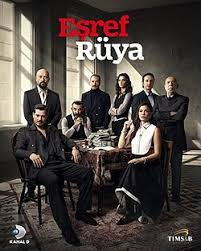
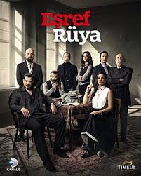

.jpeg)
.jpeg)
.jpeg)
.jpeg)
.jpeg)
.jpeg)
.jpeg)
.jpeg)
.jpeg)
.jpeg)
.jpeg)
.jpeg) 

Squid Game - Hwang ideyanı öz iqtisadi mübarizələrinə, eləcə də Cənubi Koreya və kapitalizmdəki sinfi bərabərsizliyə əsaslanaraq təsəvvür etdi . [ 8 ] [ 9 ] Hekayəni 2009-cu ildə yazsa da, Hwang xarici proqram təkliflərini genişləndirmək üçün Netflix 2019-cu ildə maraqlanana qədər ideyanı maliyyələşdirəcək prodüser şirkəti tapa bilmədi.
Kurtlar Vadisi - Yurt dışında istihbarat adına birçok başarılı operasyonda bulunan Ali Candan; en son Kosova'da iken emrinde olduğu Aslan Akbey tarafından yurda çağrılmış ve kendisine en kritik görev olan Kurtlar Vadisi Operasyonu görevi verilmiştir. Bu görevdeki amaç; mafyanın en tepesindeki güç olan ve Mehmet Karahanlı'nın baron olduğu Kurtlar Konseyi'nin çökertilmesidir. Bu görev hiç kolay değildir ve Kurtlar Konseyi çok güçlüdür. Öyle ki konsey, Türkiye'nin yıllık millî gelirinin yarısı kadar bir paraya hükmetmektedir.
Siccin - Bir adamın ailesiyle birlikte kaçıp sığındığı konakta yaşadığı dehşet verici olayları konu alan Siccîn 7, bir mafya örgütünden kaçışla başlayan bir korku hikâyesini anlatır. Doktor Kemal, çocuk dilenci mafyasıyla girdiği kanlı bir anlaşmanın ardından mesleğini bırakmak zorunda kalır ve ailesiyle birlikte amcasının konağına sığınır. Ancak Kemal’in kızını kurtarmak amacıyla bulaştığı büyük bir sır, Alzheimer hastası annesi Lale’nin zihnindeki karanlıkla birleşince, konağı paranormal olayların yaşandığı bir kâbuslar labirentine çevirir. Bu sırada Meral, aileye yardım etmek bahanesiyle konağa girer, fakat onun asıl amacı 2018 yılında Kara Ay’da yapılan bir ayinin gerekliliklerini yerine getirmektir.
V for Vendetta - Bəzi siyasi qruplar V for Vendetta-nı hökumət tərəfindən zülmün alleqoriyası kimi görürlər ; anarxistlər bundan öz inanclarını təbliğ etmək üçün istifadə ediblər. Film anti-qurum əleyhinə siyasi qruplar və fəaliyyətlər tərəfindən Guy Fawkes maskasından istifadənin populyarlaşmasına görə hesab olunur .
Kurulus Osman - O, kömür karası gözleriyle, gaza ve hürriyet ateşini tutuşturacaktı. Adı, Ertuğrul Gazi oğlu Osman Gazi Karanlığın içinde ona yol gösteren "aşk" oldu… Kan ve gözyaşıyla sulanan topraklarda, gök ekini gibi biçilen; yedi göğü, yedi yeri, dağları, denizleri aşacak bir milletin rüyasını "aşkla" gördü. Gücünü kılıcından değil, "aşktan" aldı… Zorbalığa adaletle; köleliğe hürriyetle direnen, tarihin gördüğü en büyük imparatorluğa adını "aşkla" verdi. 72 milleti kıran bozuk düzene karşı başkaldırı, mazlumların sessiz çığlığına umut, 400 çadırlık bir obadan, "ilahi aşkla" kurulan bir cihan imparatorluğuna -Osmanlılar- yürüyüşün hikâyesi.
Soz - Tims&B Productions tarafından yapımı üstlenilen, ilk bölümü 3 Nisan 2017 tarihinde yayımlanan, yönetmenliğini Yağız Alp Akaydın’ın yaptığı, senaryosunu Ethem Özışık, Hakan Bonomo ve Ercan Uğur'un birlikte kaleme aldıkları, askeri, aksiyon, savaş ve dram türündeki Türk yapımı televizyon dizisidir. 3 sezondan oluşan dizi, 27 Mayıs 2019 tarihinde yayımlanan 84. bölümü ile final yaparak sona erdi.
The Mask - Film 29 iyul 1994-cü ildə New Line Cinema tərəfindən buraxıldı və kritik və kommersiya uğuru qazandı. Film 18-23 milyon dollarlıq büdcə ilə 351,6 milyon dollar gəlir əldə edərək 1994-cü ilin ən çox gəlir gətirən dördüncü filmi oldu və bu, onu o vaxta qədər komiks əsasında ən gəlirli film etdi. Film 1990-cı illərdə swinq musiqisinin yenidən canlanmasına da təsir etdi. Bu, Kerrinin 1990-cı illərin əhəmiyyətli aktyoru kimi reputasiyasını möhkəmləndirdi və Diazı aparıcı xanım kimi qurdu . Carrey roluna görə Qızıl Qlobus mükafatına namizəd oldu və film Forrest Gump- a uduzaraq Ən Yaxşı Vizual Effektlər üzrə Akademiya Mükafatına namizəd oldu .
Avengers - Avengers 1963-cü ildə Sten Li və Cek Kirbi tərəfindən yaradılan Marvel Comics- in eyniadlı komandasına əsaslanan Marvel Sinematik Kainatının (MCU) media franşizasının superqəhrəmanları və baş qəhrəmanlarından ibarət komandadır. SHIELD direktoru Nik Furi tərəfindən əsası qoyulan komanda ABŞ - a əsaslanan, “əsaslı, supergüclü , istedadlı ” kimi təsvir edilən bir təşkilatdır . Dünyanın müxtəlif təhdidlərdən qorunmasına sadiq olan ən Mightiest Heroes.
Brekaing Bad - Breaking Bad 20 yanvar 2008-ci ildə AMC-də nümayiş olundu və 62 seriyadan ibarət beş mövsümdən sonra 29 sentyabr 2013-cü ildə başa çatdı . Breaking Bad - in ilk mövsümü ümumiyyətlə müsbət rəylər aldı, sonrakı mövsümlər (xüsusilə beşinci və son mövsüm) tamaşalar, rejissorluq, operatorluq , yazı, hekayə və xarakter inkişafı üçün təriflə universal tənqidi bəyənmə aldı . Şounun ilk üç mövsümündə ədalətli izləyici kütləsi var idi, lakin dördüncü və beşinci sezonlar dördüncü mövsümün premyerasından bir qədər əvvəl Netflix- də təqdim edildikdən sonra tamaşaçıların sayı orta səviyyədə artdı . 2013-cü ildə beşinci mövsümün ikinci yarısının premyerasından sonra tamaşaçıların sayı eksponent olaraq artdı.
Harry Poter - İngilis yazıçısı JK Rowling tərəfindən yazılmış yeddi fantastik roman seriyasıdır. Romanlar Hoqvarts Cadu və Sehrbazlıq Məktəbinin tələbələri olan gənc sehrbaz Harri Potter və onun dostları Ron Uizli və Hermiona Qrencerin həyatından bəhs edir. Əsas hekayə qövsü Harrinin ölümsüz olmaq, Sehrli Nazirlik kimi tanınan sehrbazların idarəedici orqanını devirməkvə bütün sehrbazları və Maqlları (qeyri-sehrli insanlar) özünə tabe etmək niyyətində olan qaranlıq sehrbaz Lord Voldemort ilə münaqişəsinə aiddir.
La Casa De Papel - Professor ləqəbli sirli bir adam tarixdə ən böyük pul soyğununu həyata keçirməyi planlaşdırır. Bu böyük ambiasiyalı planı həyata keçirmək üçün itirməyə heç nəyi qalmayan, xüsusi qabiliyyətlərə malik 8 nəfəri soyğuna cəlb edir. Məqsəd İspaniya Kral Zərbxanasına basqın təşkil etmək və 2,4 milyard avro pul çap edib aparmaqdır. Bunun üçün onların 11 günə ehtiyacları var. Bu zaman müddətində komanda 67 girov və polislərlə də məşğul olmalıdır.
Joker - Phillips 2016-cı ildə Cokerə hamilə qaldı və 2017-ci ildə Silver ilə ssenari yazdı. İkisi 1970-ci illərin xarakter araşdırmalarından və Martin Scorsesenin filmlərindən , xüsusən də Taksi Sürücüsü (1976) və Komediya Kralı (1982); Scorsese əvvəlcə prodüser kimi layihəyə qoşuldu. Film Betmen: Öldürmə Zarafatı (1988) və Qara Cəngavər Qayıdılır (1986) filmlərinin süjet elementlərini sərbəst şəkildə uyğunlaşdırır, lakin Phillips və Silver başqa cür ilham almaq üçün xüsusi komikslərə baxmırdılar, nə də ki, onun əvvəlki Batman filminin davamlılığı ilə əlaqələndirilməsini istəmirdilər.
Venom - 1 oktyabr 2018-ci ildə Regency Village Teatrında premyerası oldu və oktyabrın 5-də ABŞ-da nümayiş olundu. Tənqidçilərin ümumiyyətlə mənfi rəylərinə baxmayaraq, Hardinin performansı və personajının Venom ilə münasibəti yüksək qiymətləndirildi və film 2018-ci ilin ən çox gəlir gətirən yeddinci filmi oldu və bir neçə oktyabrda 185 milyon dollar qazanaraq dünya rekordu vurdu. azad edin. İki davam filmi buraxıldı: Venom: Let There Be Carnage (2021) və Venom: The Last Dance (2024).
Esref Ruya - Dizinin ilk bölümü YouTube'da 24 saatte 3 milyon, 20 gün içinde ise 23 milyon izlenmiştir. İlk 4 bölümü YouTube'da yayınlanan dizi, 5. bölümden itibaren televizyon yayınından bir gün sonra Türkiye'de Amazon Prime Video'da yayınlanmaktadır.